A tuberculose é uma bacteriose (doença infecciosa causada por uma
bactéria) que afeta alguns órgãos, principalmente os pulmões. O
Brasil está ocupando o 17° lugar entre os 22 países
responsáveis por 82% do total de casos da doença no mundo.
O dia 24/03 é considerado Dia Mundial de Combate à Tuberculose,
a data foi criada em 1982 pela Organização Mundial da Saúde (OMS),
uma homenagem aos 100 anos da descoberta da bactéria causadora da
tuberculose.
A tuberculose é uma das doenças infecciosas mais antigas e persistentes da humanidade.
Descoberta
Foi descoberta em 1882 pelo microbiologista alemão Robert Koch.
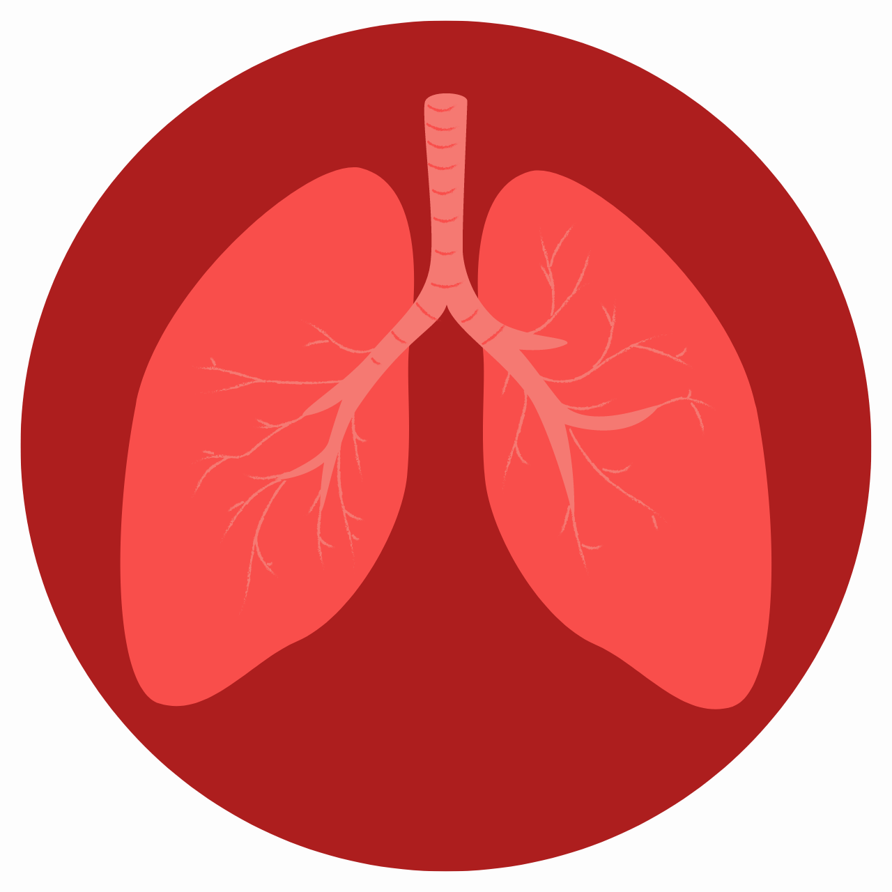
Além disso...
A doença afeta principalmente os pulmões, mas também pode afetar outros órgãos, como os rins, ossos e cérebro.
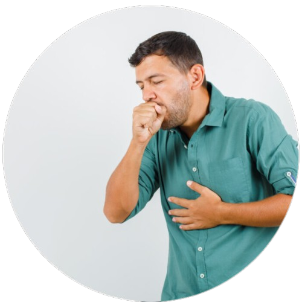
Fonte: Freepik
Transmissão
Transmissão por gotículas
Além dos aerossóis, a tuberculose também pode ser transmitida por gotículas
maiores que são expelidas quando uma pessoa infectada tosse ou espirra diretamente no rosto de outra pessoa.
Transmissão por contato
Em casos raros, a tuberculose pode ser transmitida através do contato direto com feridas abertas, lesões
ou tecidos infectados de uma pessoa com tuberculose extrapulmonar, como tuberculose cutânea.
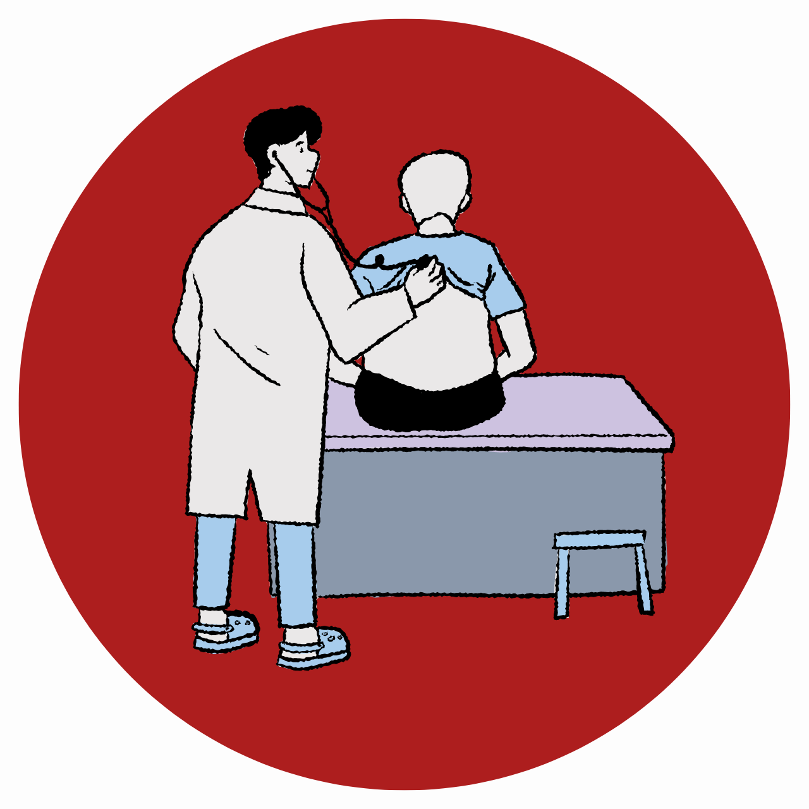
Transmissão ocupacional
Profissionais de saúde que têm contato frequente com pacientes infectados com tuberculose têm um risco
aumentado de contrair a doença se as precauções adequadas não forem tomadas, especialmente durante
procedimentos que geram aerossóis, como a aspiração de vias respiratórias.
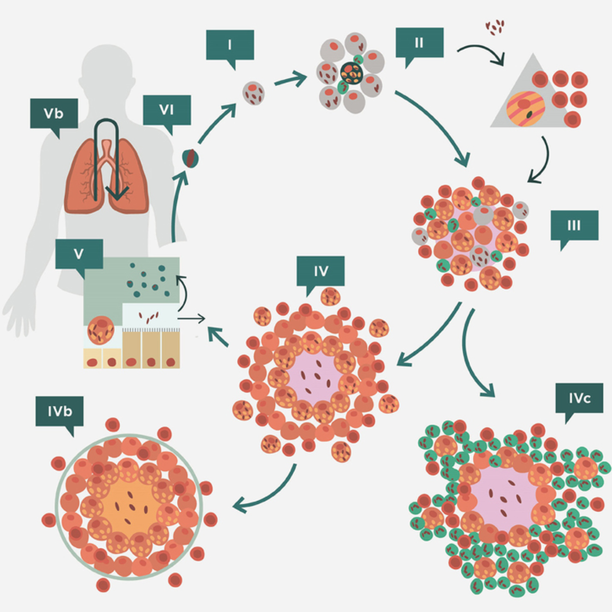
Fonte: Vilaplana and Cardona
Ciclo da doença
Fonte de infecção
A fonte primária de infecção é uma pessoa infectada com tuberculose pulmonar ativa. Essa pessoa
apresenta lesões nos pulmões que contêm a bactéria Mycobacterium tuberculosis. Quando a pessoa
infectada tosse, espirra, fala ou canta, as bactérias são expelidas no ar na forma de pequenas
partículas chamadas de aerossóis.
Disseminação no ambiente
Os aerossóis que contêm as bactérias são liberados no ar e podem permanecer suspensos por um
período de tempo. Em ambientes fechados e mal ventilados, as partículas podem permanecer suspensas
por mais tempo, aumentando a probabilidade de inalação por pessoas saudáveis.
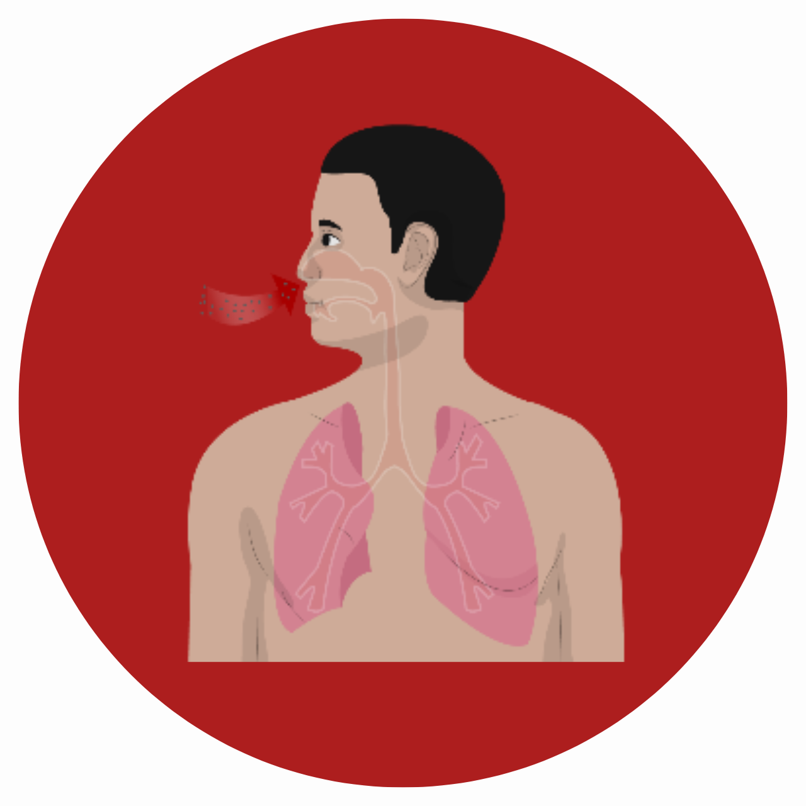
Inalação e infecção
Pessoas saudáveis que compartilham o mesmo ambiente que a fonte de infecção podem inalar
os aerossóis contendo as bactérias da tuberculose. As bactérias entram nos pulmões por
meio da inalação e podem se estabelecer nos alvéolos pulmonares.
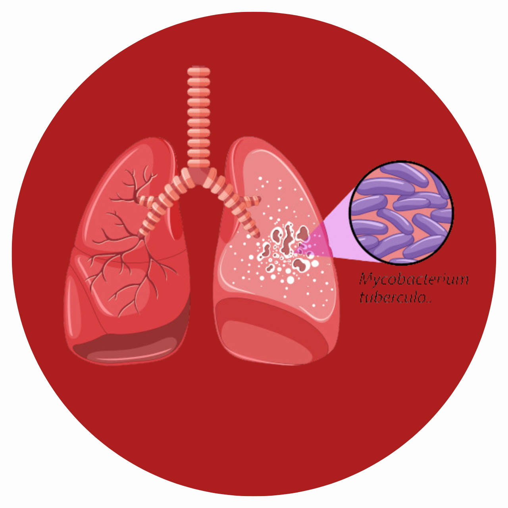
Infecção latente ou tuberculose ativa
Após a inalação das bactérias, duas situações podem ocorrer. A maioria das pessoas desenvolve
uma infecção latente por tuberculose, o que significa que as bactérias estão presentes em seus
corpos, mas o sistema imunológico as mantém sob controle e não há sintomas da doença. No entanto,
em algumas pessoas, a infecção pode se transformar em tuberculose ativa, em que as bactérias se
multiplicam e causam sintomas da doença.
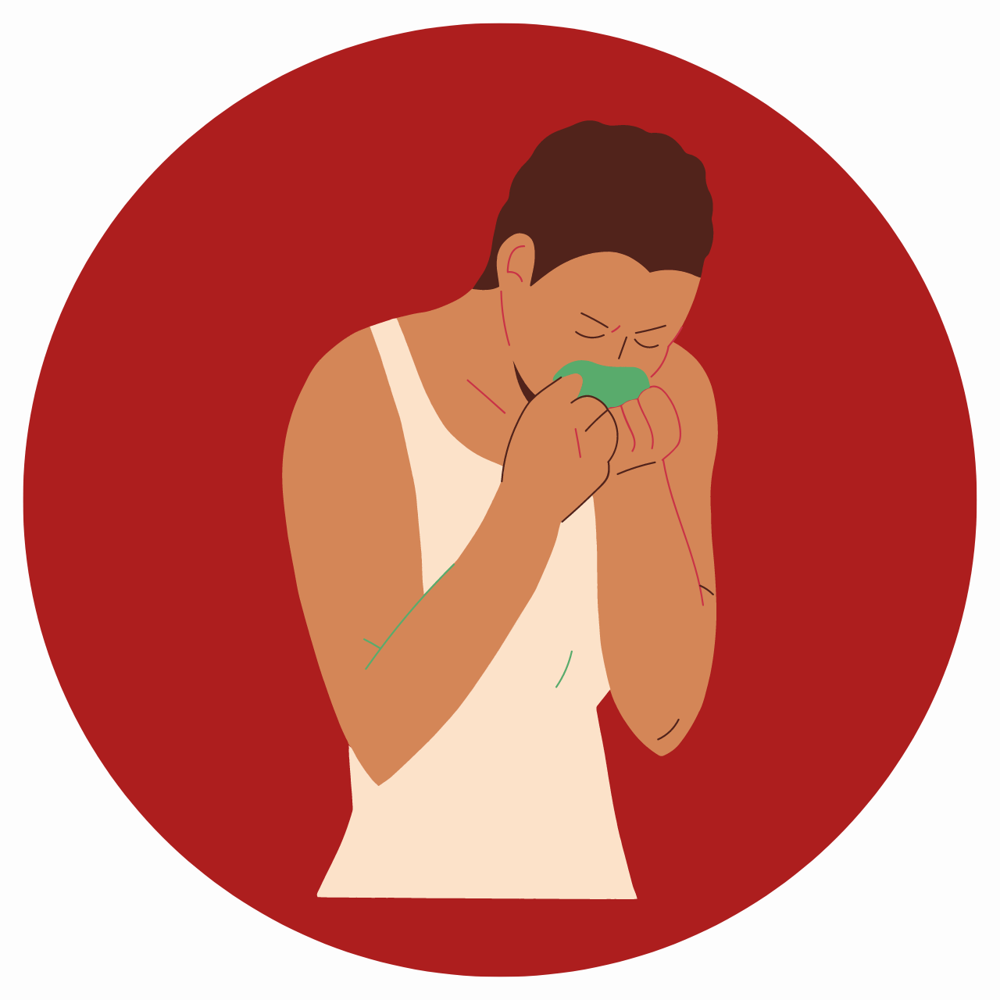
Transmissão secundária
Se uma pessoa desenvolve tuberculose ativa, ela pode se tornar uma fonte secundária de infecção
e transmitir a doença para outras pessoas através da tosse, espirros, fala ou canto. Isso inicia
um novo ciclo da tuberculose, com outras pessoas sendo infectadas e podendo desenvolver infecção
latente ou tuberculose ativa.
Sintomas da tuberculose
Confira abaixo alguns dos sintomas da doença:
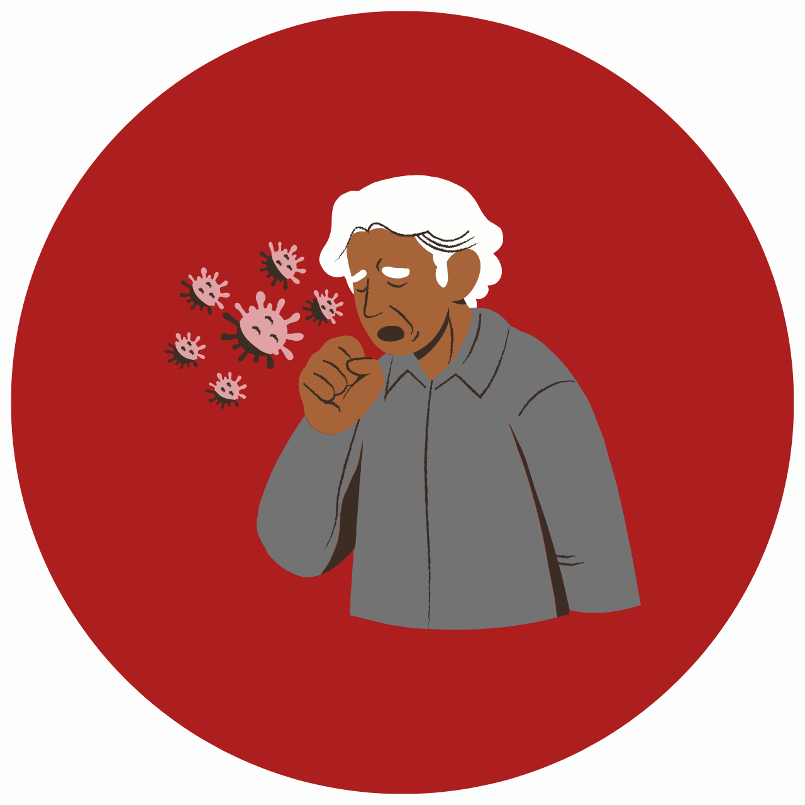
Tosse persistente
A tosse contínua, que dura mais de duas semanas, é um dos sintomas mais comuns da doença.
Febre
Geralmente é de baixa intensidade, mas pode se tornar alta em casos mais graves.
Suores noturnos
Quando ocorre de forma excessiva durante a noite, especialmente quando não está relacionada a outras condições.
Perda de peso
Alguns sintomas da tuberculose associados à perda de peso são a falta de apetite e a fraqueza geral.
Fadiga
Uma sensação constante de cansaço, fraqueza e falta de energia.
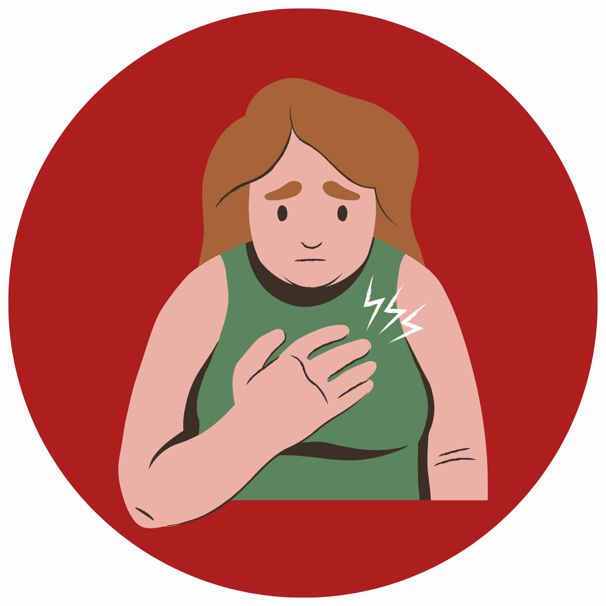
Dores no peito
A dor pode ser agravada pela tosse ou respiração profunda.
Fonte: Tua Saúde
Tratamento
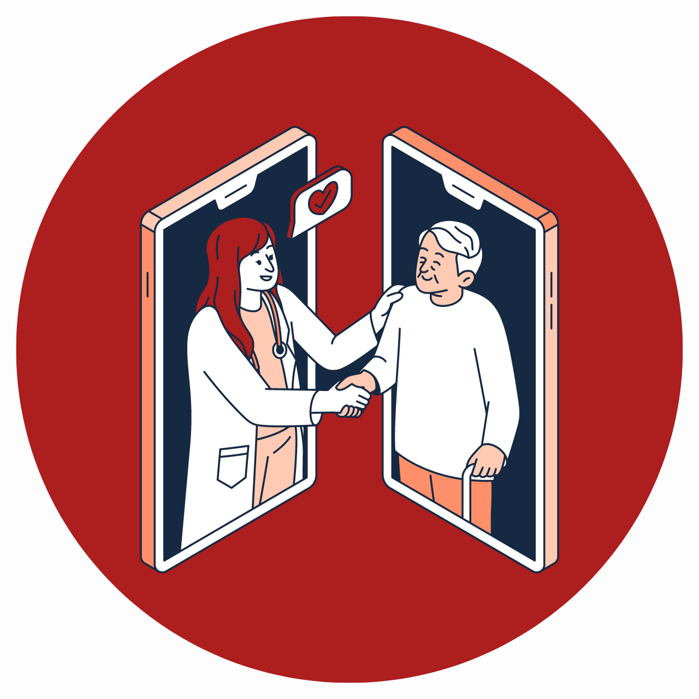
É fundamental que o tratamento seja seguido conforme prescrito pelo médico, sem interrupções,
mesmo que os sintomas desapareçam ou melhorem antes do término do tratamento.
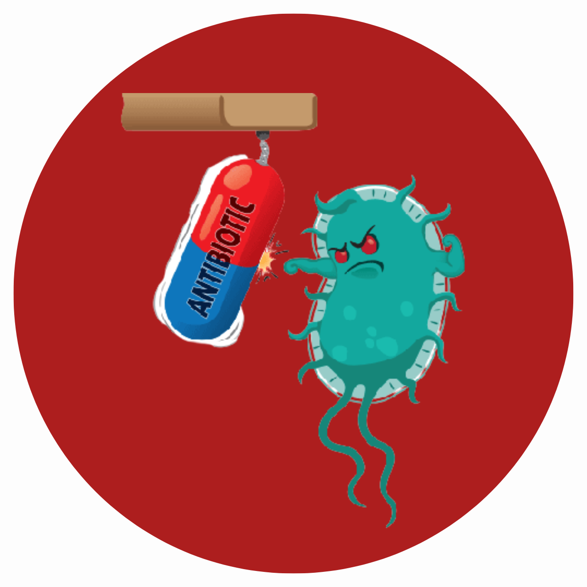
A interrupção prematura do tratamento pode levar a recidivas da doença, desenvolvimento
de resistência aos medicamentos e maior dificuldade no tratamento posterior.
O regime de tratamento padrão para a tuberculose é conhecido como tratamento diretamente
observado (DOTS) e envolve a combinação de diferentes medicamentos antituberculose.
A duração total do tratamento varia de acordo com a forma da doença e o contexto clínico,
geralmente durando de 6 a 9 meses. Durante a fase intensiva, que dura aproximadamente 2
meses, são administrados vários medicamentos combinados. Em seguida, na fase de continuação,
são utilizados medicamentos em menor quantidade por um período de tempo mais longo.
Medidas profiláticas
A tuberculose ainda é uma doença que causa muitas mortes, principalmente em países de baixa e média renda, por isso, requer alguns cuidados. Algumas das medidas preventivas contra a tuberculose são:
NARDELL, Edward A.. Como a tuberculose se desenvolve? Disponível em: https://www.msdmanuals.com/pt-br/casa/infec%C3%A7%C3%B5es/tuberculose-e-infec%C3%A7%C3%B5es-relacionadas/tuberculose-tb#:~:text=A%20tuberculose%20%C3%A9%20uma%20infec%C3%A7%C3%A3o,qualquer%20%C3%B3rg%C3%A3o%20pode%20estar%20envolvido.. Acesso em: 28 maio 2023.
SAÚDE, Biblioteca Virtual em. Dia Mundial de Combate à Tuberculose. Disponível em: https://bvsms.saude.gov.br/24-3-dia-mundial-de-combate-a-tuberculose/. Acesso em: 28 maio 2023.
SAÚDE, Ministério da. Tuberculose. Disponível em: https://www.gov.br/saude/pt-br/assuntos/saude-de-a-a-z/t/tuberculose. Acesso em: 29 maio 2023.